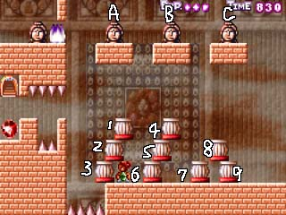

こんな感じにオブジェクトを動かしてください。
久しぶりに攻略のリクエストが来ましたので、
久しぶりに攻略してみたいと思います。
というか、写真を並べるだけでも十分なような気がしますが、がんばって文章も書きます。
| ４−９ 白黒共通 えと、白だと左上の大仏も使えるので |
|
６のオブジェクトを左右にずらしながら、 こんな感じにオブジェクトを動かしてください。 |
|  | ７のオブジェクトを下に落とし、 １，２，３のオブジェクトをさらに左にずらします。 |
| １のオブジェクトを右側に落とし、 それを足場にして２のオブジェクトを左にずらしましょう。 |
| Ｃの大仏を落としたら、それを足場にして、 ５，４のオブジェクトを左に運びます。 |
| あとはＡ，Ｂの大仏を落とし、左側に運べば終了です。 余談ですが、途中まで大仏のグラフィックには |